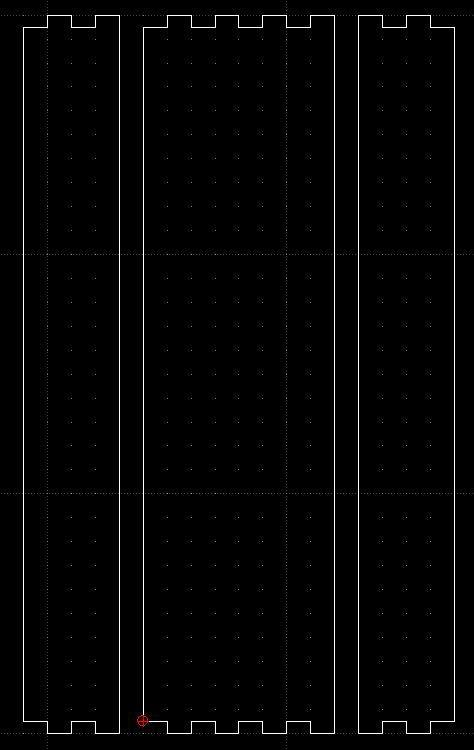
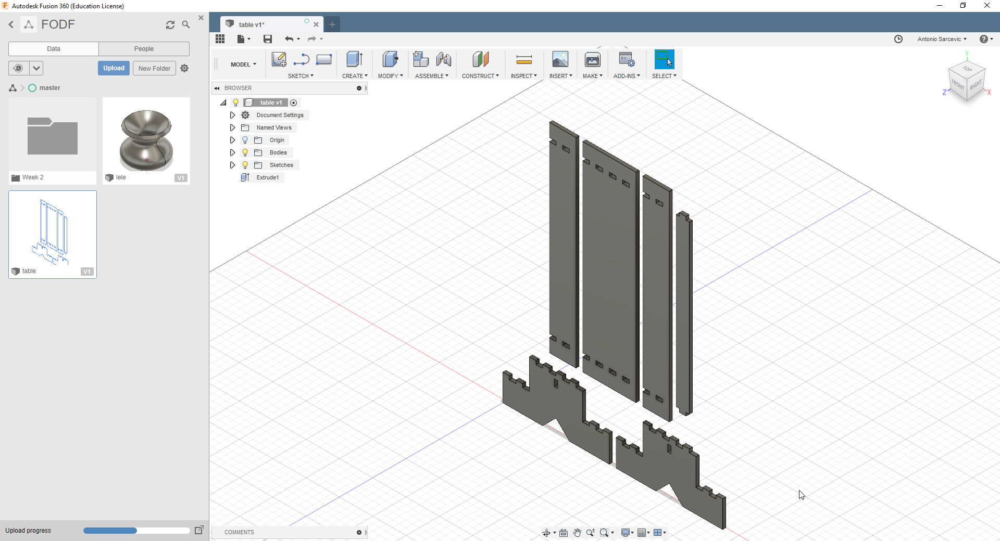
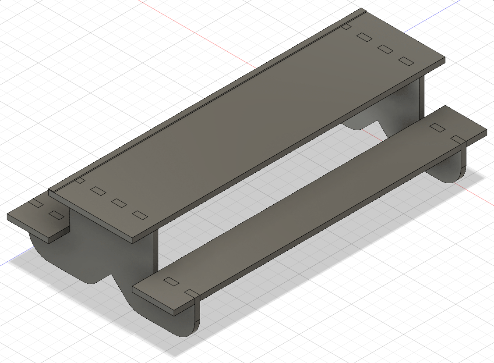

So this week, we got an introduction into LibreCAD and Fusion 360. The Assignment was to make a 2D and a 3D Design of a possible final project.
To start with the 2D project, I decided to create a little mini picnic table for fingerboarding. As a model, I decided to use this blackriver-ramps Table.
It started, by creating the base piece in LibreCAD. I converted the length, width and height and rounded them. I went with a length of 30cm, a width of 16cm and a height of 8cm. Then I decided that the table should be twice the width of the banks.
Next, I created the top pieces and thought added notches so the pieces could snap together. To add notches I used the tim tool.
Using the mirror tool, I created the second bank piece, while keeping the original.
Then I drew the top, main table part.
Then I drew a hole in the base piece and added a little supporting piece.
To finish, I only needed to duplicate the base piece using the move tool.
I decided to change the place where the top part attach to the base, so it wouldn't be right at the edge. To do that I deleted the notched edges and added holes in the top parts.
Then, after converting the other pieces I was pretty much done.
I wanted to put the table together in 3D so, the next step was to somehow import the file in Fusion 360.
To do that, I uploaded the table.dxf to Fusion 360.
After uplaoding, I could open up the file as a Fusion 360 Project
I used the extrusion tool to extrude a 5mm thick piece for every piece.
Then, I used the move tool, to fit the pieces together.
I then looked for a tool to round of the edges. The fillet tool was perfect.
I rounded of the edges using the fillet tool.
To make the bench better for grinding, I wanted to add a metal rail to the top part of the table.
I started by creating a new sketch and drawing the outline of the rail.
Then, I extruded it to 300mm with the extrusion tool.
After that, I had to move it to the correct position and make a copy for the other side.
But I realized I somehow merged almost the whole table.
This is a big problem, since I can't move the rail alone anymore.
I went back and tried drawing the rail again, but this time leaving a little space.
Hopefully now, when I extrude the rail It won't somehow merge again.
Luckily, this time it worked.
Now back to the move tool.
I then used the move tool (checking the "create copy" box) to copy the rail to all edges.
Finally, my table was complete.